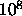

We now mention some tests of parallel random number generators.
Exponential sums: The exponential sum (Fourier transform of the density) of a sequence is:
For a random sequence (for ).
This fact can be used to test correlation within, and
between, random number sequences [13, 16]. Consider two
random sequences X and Y and define the exponential sum
cross-correlation:
In each term of this sum, we find the difference between an element of
each sequence at a fixed offset apart. If this difference were
uniformly distributed, then we should have:
Parallel spectral test: Percus and Kalos [14] have developed a version of the spectral test for parallel linear congruential generators.
Interleaved tests: We create a new random sequence by interleaving several random sequences, and test this new sequence for randomness using standard sequential tests.
Fourier transform test: Generate a two dimensional array of random numbers with each row in the array consisting of consecutive random numbers from one particular sequence. The two dimensional Fourier transform can be performed. For a truly uncorrelated set of sequences the coefficients (except the constant term) should be close to 0.
Blocking test: In the blocking test we add random numbers from several streams as well as from within a stream. If the streams are independent, then the distribution of these sums will approach the normal distribution.
We now give some test results for the LCG with (parameterized) prime addend and a modified version of the LFG. Both of these generators performed acceptably in the sequential tests with random numbers. Preliminary results from other tests of PPRNG can also be found in the paper by Coddington [37].
We first tested the generators by interleaving about 1000 pairs of
random sequences each containing about  PRNs. Both the
generators passed this tests. Next we simulated parallelism on the
Ising model by using a different random sequence for
each lattice site in the Metropolis algorithm. The LCG (with
identical seeds) failed badly as can be seen from the dashed line in
Fig.  . We then generalized the statistical
tests, interleaving 256 sequences at a time. The LCG again failed,
demonstrating the effectiveness of these tests in detecting
non-random behavior. The modified LFG passed these tests.
. We then generalized the statistical
tests, interleaving 256 sequences at a time. The LCG again failed,
demonstrating the effectiveness of these tests in detecting
non-random behavior. The modified LFG passed these tests.
Figure: Plot of the actual error versus the internally estimated standard deviation
of the energy
error for Ising model simulations with the Metropolis algorithm on a lattice with a
different Linear Congruential sequence at each lattice site. The
dashed line shows the results when all the Linear Congruential
sequences were started with the same seeds but with different additive constants.
The solid line shows the
results when the sequences were started with different seeds.
We expect around 95% of the points to be below the dotted
line (which represents an error of two standard deviations) with a good generator.
In the tests mentioned above, we had started each parameterized LCG
with the same seed but used different additive constants. Even when we
discarded the first million random numbers from each sequence, the
sequences were still correlated. However, when we started the streams
from different, systematically spaced seeds, the LCG passed all
statistical tests (including parallel ones) with up to -
 numbers. We finally repeated the parallel Metropolis
algorithm simulation with random numbers, and both
generators performed acceptably, as can be seen from the solid line in
Fig.
numbers. We finally repeated the parallel Metropolis
algorithm simulation with random numbers, and both
generators performed acceptably, as can be seen from the solid line in
Fig.  .
.
Apart from verifying the quality of two particular generators, our results illustrate that it is commonplace for generators to pass some test and fail others. It is important to test parallel generators the way they will be seeded, since correlations in the seeding can lead to correlations in the resulting sequences.